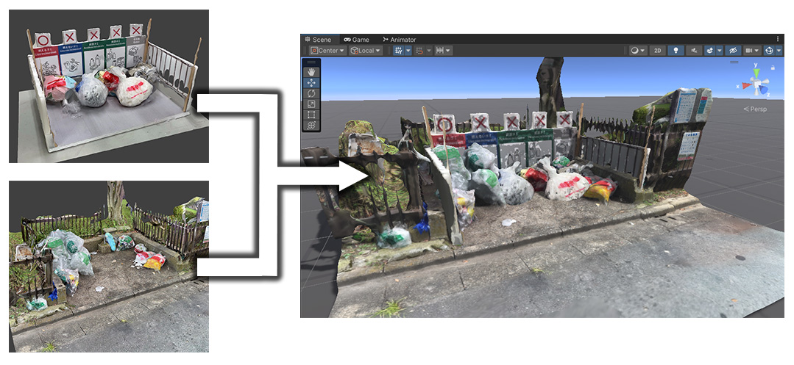
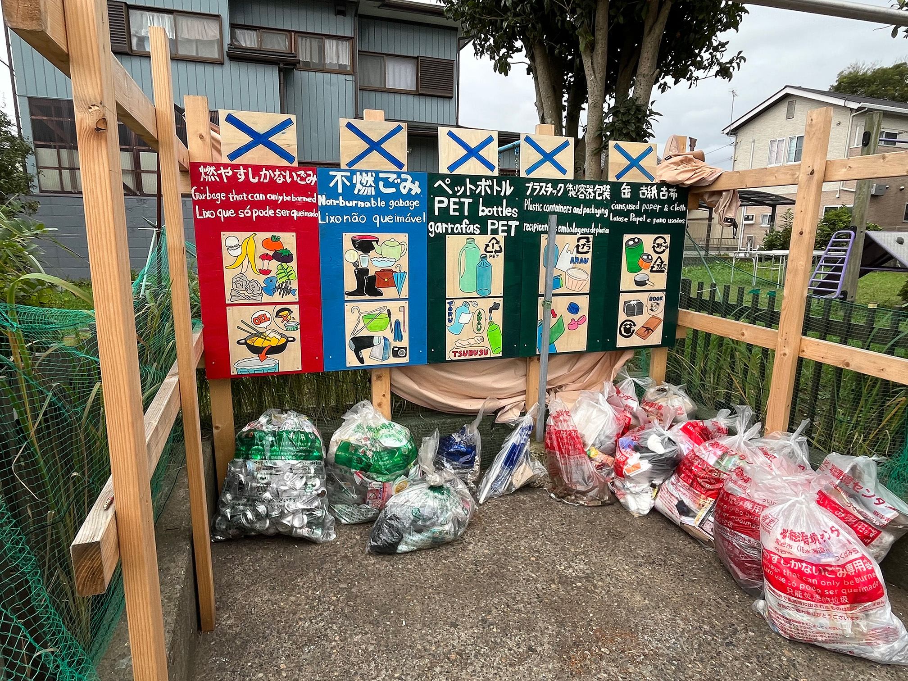

01. 概要
2025年7月よりVRChat内での創作活動を開始。既存の3Dアセットを単純に組み合わせるアバター改変に留まらず、異なる制作者によって作られたアセット間のマテリアルやライティングの不一致を解決するルック開発を実践。情報デザインの理論に基づく構図設計や、コミュニティの文化的背景を汲み取ったレタッチワークフローを構築しています。
02. 課題とアプローチ
異素材アセットの最適化とチャームポイントの設計
市販 of 3Dアセットを組み合わせる際、販売元ごとにシェーダー設定やテクスチャのライティング前提が異なるため、そのまま配置すると全体のシルエットや質感がバラバラになる課題がありました。これに対し、Unityの画面上だけでなく、多様なライティング環境を持つ実際のVRChatのワールド群へ足を運び、実機での見え方を検証。マテリアル設定やシェーダーのパラメータを調整し、空間に馴染む最適なルックへと昇華させました。また、全体を調和させつつも、キャラクターを一言で言い表せるチャームポイントを意図的に配置し、個性を引き立たせています。
CG空間の特性を活かしたカメラワークとレタッチ
リアルのカメラ機能を再現した仮想カメラギミックを用い、三分割法などの構図や被写界深度を適用。さらに、CG空間ならではの利便性である自在なカメラ配置やポーズの完全固定といった長所を活かし、ワールドとアバターが最も美しく調和する瞬間を切り取っています。
文化に寄り添う質感表現とメディアを跨いだ表現の多様性
VRChatのコミュニティ（主にX等のSNS）においては、写実的な写真よりも一枚絵のイラストチックな質感（ルック）が好まれるという文化特有のトレンドが存在します。この背景を分析し、ワールド制作者が意図した光の向きや空気感をリスペクトしつつ、Photoshopを用いてトーンカーブやカラーバランスを調整しました。3Dアバターの切り抜きを現実の風景写真へ合成する表現にも挑戦し、メディアの境界を曖昧にする表現の多様性を模索しています。
// ギャラリー：空間のライティング調整と構図検証の記録（横スクロールで閲覧可能）
03. リアルへの還元：ADP演習への応用
他学類（芸術専門学群）との合同演習「アート・デザインプロデュース演習（ADP）」において、茨城県常総市の外国人移住者向けに、言葉の壁を越えて直感的に分別がわかるゴミ捨て場可動看板を制作。設置後のゴミ捨て場一帯を撮影し、フォトグラメトリによって3D空間へと再構築してVRChat上にアップロードしました。学内や行政の方々が現地に赴くことなく空間を把握できるバーチャル視察アセットとしての活用を提案し、リアルな立体物をバーチャルに還元して広報や検証の可能性を広げる思考を養いました。

// 常総市に設置した分別可動看板

// フォトグラメトリによる周辺環境の3D化検証